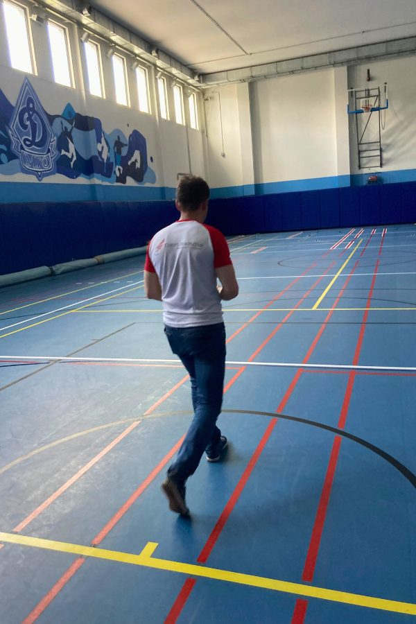
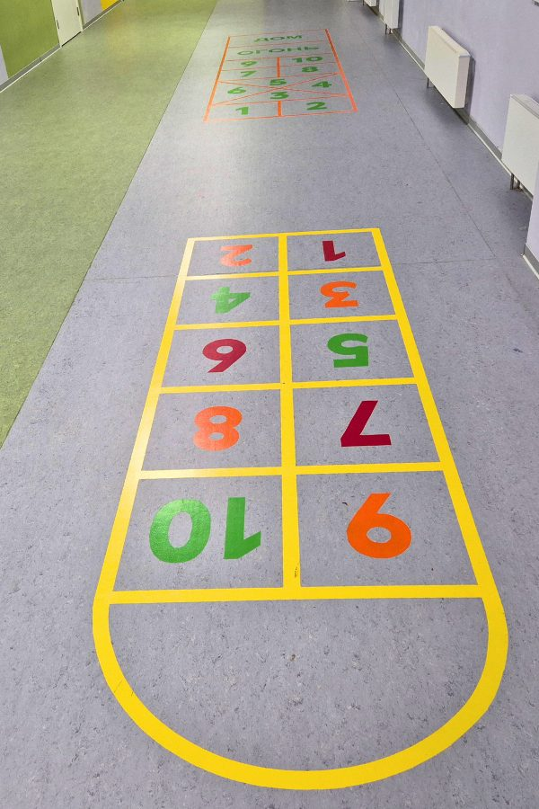
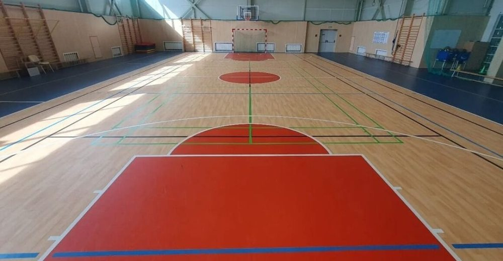

Спортивная разметка на улице и в залах
Наносим стойкую разметку на площадках, в школьных залах и ФОК: баскетбол, волейбол, мини-футбол, теннис, бадминтон, гандбол, стритбол, универсальные схемы и беговые дорожки.
Запросить КПЗачем нужна разметка
Разметка разграничивает игровые зоны, даёт ориентиры спортсменам, фиксирует решения судей и влияет на безопасность. Размеры и ширина линий берутся из правил соответствующих федераций и нормативов.
Виды разметки
| Вид | Что учитываем |
|---|---|
| Баскетбол | Правила FIBA, поле 28 × 15 м (можно адаптировать под размеры зала), ширина линий 50 мм |
| Волейбол | Габариты поля по правилам вида спорта |
| Мини-футбол | Прямоугольная геометрия и зоны ворот |
| Теннис | Правила ITF, схема корта |
| Бадминтон | Правила BWF, ширина всех линий 40 мм, корт 13,40 × 6,10 м (парная игра) |
| Гандбол и стритбол | Схема по правилам вида спорта |
| Универсальная разметка | Несколько видов спорта в одном зале, линии разных цветов |
| Беговые дорожки | Разметка по погонным метрам |
| Разметка по эскизу | Рисунки и логотипы по макету заказчика |
Где и на какое основание
| Объект | Основания |
|---|---|
| Залы и ФОК | ПВХ-линолеум, дерево, регупол |
| Открытые площадки и стадионы | Резиновая крошка, акриловый хард, бетон и другие жёсткие основания |
Как наносим
- ПодготовкаПроверка размеров и пропорций по правилам вида спорта, ровности и чистоты поверхности.
- Подбор краскиДвухкомпонентные износостойкие краски, подходящие для данного покрытия.
- НанесениеШаблоны и геодезический контроль, чёткая геометрия линий.
- ПроверкаВысыхание, непрерывность линий, отсутствие отклонений.
Как проверить качество при приёмке
- Размеры соответствуют правилам вида спорта
- Ширина линий одинакова
- Нет смещений и разрывов
- Цвет ровный, краска не стирается под нагрузкой
Примеры с действующего сайта



Частые вопросы
Можно ли наносить разметку на резиновое покрытие?
Да, если поверхность ровная и без дефектов.
Что влияет на точность разметки?
Соблюдение официальных размеров, проверка геометрии до нанесения и подготовленное основание.
Нужна ли отдельная разметка для школы?
Размеры могут адаптироваться, но должны соответствовать утверждённым стандартам для образовательных учреждений.
Какие краски используются?
Двухкомпонентные износостойкие краски. Названия марок на сайт не выносим [уточнить].
Другие услуги
Нужен расчёт по этой услуге?
Оставьте имя, телефон и почту. Мы свяжемся и подготовим коммерческое предложение.